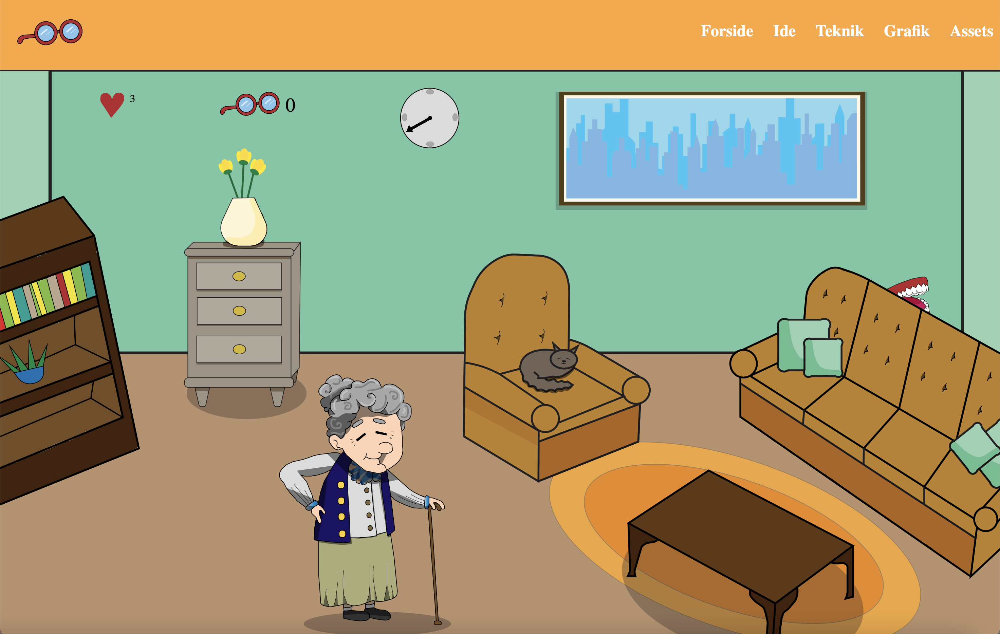

TEMA 4 grundlæggende animation
04.04.01
Temaopgave
Se websitet her I denne opgave blev vi introduceret til JavaScript. Vi brugte netop det og CSS for at skabe et lille klik-spil. Vi skulle udarbejde et koncept og ide, hvor vi derefter skulle designe alle elementerne og kode spillet. Vi skulle designe UI-elementer, figurelementer, baggrundsdesign og kompositionsteknikker som vi lærte i undervisningen, og designede dem i Adobe illustrator.
Vi planlagde vores spil ud fra et aktivitets- og statemachine diagram, som gjorde det lettere at planlægge spillets mere komplicerede interaktive flow.
Jeg valgte at lave et spil om en gammel dame, som ofte smider sine briller væk. Det er et whack-a-mole spil, hvor forskellige genstande, her i blandt hendes briller, popper frem tilfældigt i hendes stue. Point, liv og tid blev styret gennem JavaScript og CSS, som gjorde at brugeren kunne tyde hvornår de ville vinde eller tabe spillet.